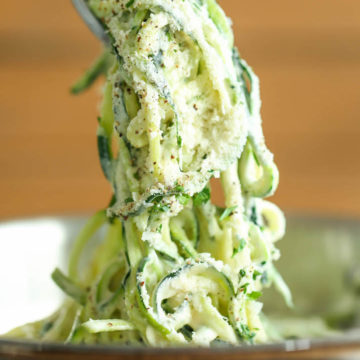

Ingredients
- 3 tablespoons unsalted butter, divided
- 1 pound (3 medium-sized) zucchini, spiralized*
- 2 cloves garlic, minced
- 2 tablespoons all-purpose flour
- 1 1/2 cups 2% milk, or more, as needed
- 1/2 teaspoon dried thyme
- 1/2 teaspoon dried oregano
- 1/4 cup half and half*
- 1/4 cup freshly grated Parmesan cheese
- Kosher salt and freshly ground black pepper, to taste
- 2 tablespoons chopped fresh parsley leaves
Description
Fettuccine Alfredo is tender pasta in a luscious cream sauce with garlic and fresh parmesan cheese. This recipe replaces the pasta with zucchini to lower the number of calories. Healthy, creamy, and low-carb, this recipe is sure to become one of your staples.
Instructions
- Melt 1 tablespoon butter in a saucepan over medium heat. Add zucchini and cook, stirring occasionally, until tender and heated through, about 3-5 minutes; set aside.
- Melt remaining 2 tablespoons butter in the saucepan. Add garlic, and cook, stirring frequently, until fragrant, about 1-2 minutes. Whisk in flour until lightly browned, about 1 minute.
- Gradually whisk in milk, thyme and oregano. Cook, whisking constantly, until incorporated, about 1-2 minutes. Stir in half and half and Parmesan until slightly thickened, about 1-2 minutes. If the mixture is too thick, add more milk as needed; season with salt and pepper, to taste.
- Stir in zucchini and gently toss to combine.
- Serve immediately, garnished with parsley, if desired.